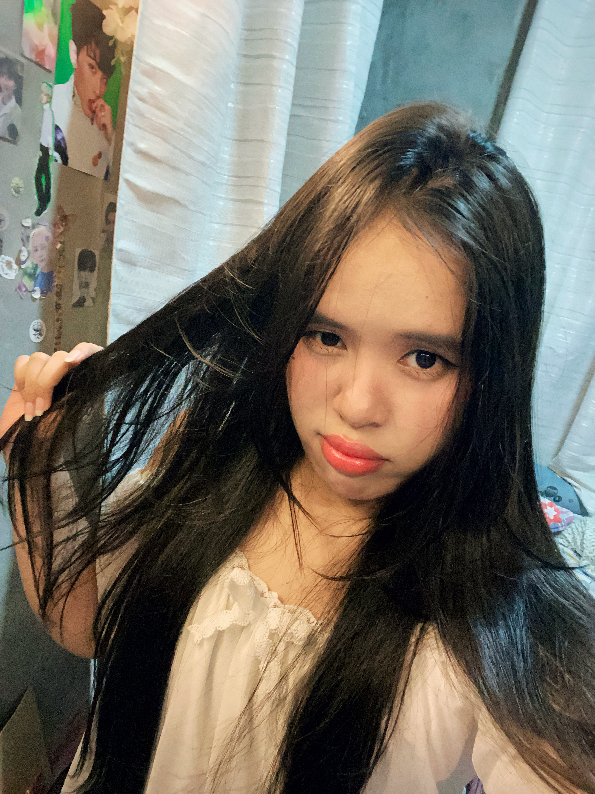

A little world
called Cien.
A collection of the things I love, the moments I keep, the stories I imagine, and the dreams I'm still growing into.
Come inside ✿Cienhel Alfonso Biñas · Cien / CN
A little about me
Not everything about me fits on one page, but here's a little place to start.

I'm Cienhel.
My name is Cienhel Alfonso Biñas, but you can call me Cien or CN. I'm curious, creative, introspective, and sometimes impatient. I love discovering things, making things, and finding little ways to express myself.
I have so many goals and dreams waiting for me. I don't know exactly where every road will lead, but I want to keep learning, creating, and collecting moments along the way.
A work in progress, just like everyone else.
My music corner
Some sounds feel like memories even before they're over.
Music I gravitate towards ♫
Favorite songs, artists, and playlists can go here. Add your Spotify playlists or embed a playlist when you're ready.
Listen with me on Spotify ↗My K-pop world
A little corner for the groups, music, performances, and people I cheer for.
And my biases ♡
Group name
Group name
Group name
Group name
My little hobbies
Different interests, different moods, all pieces of the same person.
Playing games
Collecting K-pop merch
Cute things & stickers
Writing stories
Crocheting
Dancing
Listening to music
Photography
Through my camera lens
Skies, flowers, places, animals, and ordinary days that felt worth remembering.
Nature photograph
somewhere green
Sky photograph
the sky looked pretty
Flower photograph
tiny things I noticed
Animal photograph
little friends
Scenery photograph
a place to remember
Everyday moment
life lately
My four-legged favorites
A special little gallery for my dogs and the joy they bring.
Add a little description here
Add a little description here
Add another photo here
Books & stories
I love getting lost in fictional worlds, especially the books of Ann Liang.
Ann Liang
A space for favorite quotes, book reviews, and the stories that stay with me.
Author · rating · thoughts
Author · rating · thoughts
My own little stories ✍️
A shelf for my writing projects, characters, ideas, and works in progress.
story titleanother storywork in progressMy watchlist
A little movie journal for the shows and films I love.
K-dramas ♡
Add drama posters, titles, ratings, and favorite characters.
Movies 🎞️
Add movie posters, titles, ratings, and little reviews.
One day, a filmmaker.
“I want to tell stories, capture emotions, and turn little moments into something people can feel.”
I have so many dreams and goals in life. Becoming a filmmaker is one of the biggest. For now, I'm learning, observing, creating, and collecting inspiration wherever I find it.
A little note before you go
There are still so many things I want to see, places I want to visit, stories I want to tell, and memories I have yet to make. This is just a little piece of me, for now.
Find me around the internet
Different spaces for photos, stories, music, random thoughts, and games.
◎ Instagram
Main account@moonhely↗ Dump account
@softbycien_↗
♪ TikTok
Main account@moonhely_↗ Author account
@cyn_wi↗
✧ Other social spaces
X / Twitter@cyn_wiii↗ Threads
@moonhely↗ Tumblr
@moonhely↗
♫ Music
Spotify@Moonhely↗
✎ Stories
@Moonhely_ · Search this username on Wattpad
🎮 Games & profiles
Minecraft@Moonhely↗
@moonhely · ID: 1488298119 · Server: 14324
@arnomnomi↗
Facebook intentionally left out.